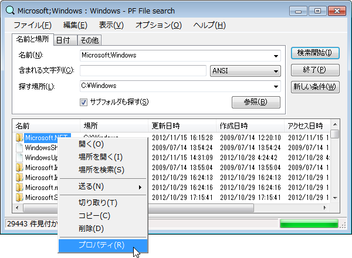

Version 2.6
Copyright(C) 2012-2022 Project Flower
ヘルプの目次を表示させて下さい。

インデックスを使用せず、従来形式のインターフェースでファイル／フォルダを検索します。
Windows Searchとインデックス サービスを使用せず、一通りの検索機能を実現する事を目標としています。
・インデックスに依存せず、Windows 98風のインターフェースでファイルやフォルダを物理検索します。
・エクスプローラでのフォルダやドライブの右クリックメニューに設定する事が出来ます。→
・Windowsで使用可能なファイル名の全ての文字を検索する事が出来ます。→
・検索クエリに正規表現を使用する事が出来ます。→
・ドライブ別に並列処理をする事が出来ます。（マルチコア環境向け）→
・検索条件をファイルに保存する事が出来ます。→
Windows XP以降
実行ファイル
PF File searchを実行します。
ヘルプファイル
PF File searchの使い方を見る事が出来ます。
検索名ログファイル（初期状態では存在しません。）
検索された名前が保存されています。
リリースノート
PF File searchのバージョン毎の更新内容が記載されています。
本ソフトウェアは無料で使用出来ます。
本ソフトウェアは、プログラムのバグ等により、予期せぬ動作をする場合があります。
本ソフトウェアにより利用者のコンピュータ等に損害や不利益を与えた場合において、ソフトウェア制作者はこれを補償する事は出来ません。くれぐれも慎重にご判断の上ご使用下さい。
又、重要・貴重なデータ類の取り扱いや、業務での使用は行わないで下さい。
PF File searchはYusuke Kamiyamane様のアイコンを使用させて頂いております。
ファイル／フォルダを検索します。
Project Flower ウェブサイト上のコンタクト フォーム（Contact）をご利用下さい。
フリーソフト
Microsoft Windows XP以降
Microsoft .NET Framework 4.0/4.0Client Profile以上がインストールされている事
配布用ファイル（pffs.zip）をZIP書庫が解凍出来るソフトウェアで解凍して下さい。
そのまま実行ファイルやヘルプファイルが利用出来ます。
右クリックメニューに追加を行うと、レジストリを変更します。
PF File searchが不要になった場合は、右クリックメニューに追加を解除すると、レジストリを削除します。
新しいバージョンを使用する場合、配布される圧縮ファイルの中身を上書きする事で新しいバージョンを使用出来ます。